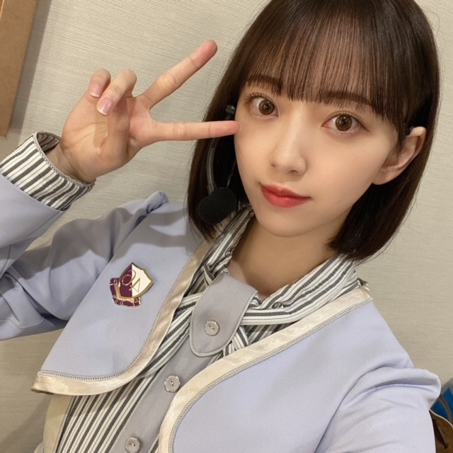

2021/0328Sun乃木坂46の堀未央奈です。
この挨拶も、今日でおしまい。
明日からは"堀未央奈"になります。ね、
乃木坂46に加入して今日で8年ぴったり。
今日の2期生ライブはどうでしたか...？
私は、この時間がずっと続けばいいのに...と何度も心の中で思いました。
リハーサルからみんなの顔が見れなくて、
それは胸がざわざわ苦しくなって
大好きで楽しいのにつらくて寂しくてたくさんの感情が押し寄せてどうしようもできなかったからです。
気持ちを押し殺すのは得意ですが、今回ばかりは溢れました。
8年前、
16歳の私は分からない事だらけで都会にも慣れず、今の私がみても不安になるくらい自分に自信もなければ実力もなくてふわふわしていました。
でもたくさんの経験をしていつのまにか自分の事も人の事も好きになる事ができて、新しいことや挑戦が"怖い"という思いより"楽しい"に変わっていきました。
乃木坂46としての活動も自信と責任を持って
取り組んでこれた8年間だったなと思います。
メンバー、家族、スタッフさん、友達、ファンの皆さん
本当に私は周りの人に恵まれていて支えられながら毎日を過ごしてきました。
強がって一人で抱え込もうとしますが、なんだかんだで周りの人に支えられっぱなしで...
みなさんがいなかったら今の私は存在していないと思います。たくさんの感謝の気持ちでいっぱいです。
MV撮影、ライブ、歌番組、イベント、
撮影、、、何もかもが新鮮で挑戦で...
わたしには夢のような
未だに私が乃木坂46だったという事が
神隠しにあっていて夢だったんじゃないかと思うほど
あっという間で濃密な時間でした。
いや、でもネット検索したらちゃんと出てきますよね。夢じゃない。よかったー。
来世では、乃木坂46に入って、
同じメンバーで、
また違う景色をみてみたいなとも思います。
たのしみ。
明日からは1人になりますが関わる方や応援してくださる方、全ての方への感謝の気持ちと初心を忘れずに頑張っていきたいと思います。
今までの活動で自分の盾となってくれたメイク関連のこともしていって、少しでも自信を持ちたいと思っている方の力になりたいのと、人が幸せになるようなプロデュースなどもしていきたいです。
女優としても0から、自分に厳しく、楽しみながら
私らしくいろんなことに挑戦していきたいなと思います。
堀未央奈を推していて、楽しかったですか？
楽しかった と言っていただけたら、
それだけで私はもう大満足です。
私は皆さんに出会えて本当によかったです。
ありがとうございました

2021.3.28
乃木坂46 2期生 堀未央奈
コメント(4413)
これからも応援してます！！
コロナウイルスの影響で直接『ありがとう』を言えなくて悲しかったけどこの場を借りて『ありがとう』と伝えさせてください。
ステージでキラキラと輝き2期生を引っ張ってくれて自然と涙が頬をつたいました。
冷たい水の中に入ってもいつまでも応援しています。
頑張ってね
当時中2だった僕に一筋の光を与えてくれたのが貴方でした。
これからもずっと応援します。大好きです。
これからも応援してます
頑張ってください！
今日で乃木坂としての活動は終わってしまったけど、女優として新たなスタートを切ってください！
応援しております！
ファンの一部より。
未央奈が乃木坂46卒業と聞いて号泣しました。乃木坂46の中で1番好きだったから…。正直未央奈はあと5年くらいいるのかなぁ〜と思いました。乃木坂を卒業しても応援し続けます。今まで本当にありがとうございました！。
これからの新しい挑戦も堀ちゃんにとって良かったと思えるように応援してるね
ありがとうございます
コレからも堀未央奈を推していきます！！
みおちゃんを推しててめちゃめちゃ楽しかったです！
これからも1人の女優として堀未央奈さんの活躍を期待してます。乃木坂46に入ってくれてありがとう！！
2期生ライブ涙がずっと止まりませんでした。
キラキラ光る、みおちゃんを見れて本当に幸せでした！
乃木坂に入ってくれてありがとう！
これからも乃木坂をずっと応援するし、みおちゃんのこともずっと応援していきます！！
出会えてほんとに楽しかったし、嬉しかったです！
これからも頑張ってください
一生の思い出になる最高のライブでした。未央奈さんの言葉の一つ一つを、大切な仲間の言葉の一つ一つを深く噛みしめながら拝聴しました。また最後の最後に、この旅立ちの場に2期生だけでなく、先輩・後輩みんなが駆けつけてくれたことに乃木坂の温かさを感じました。未央奈さんの笑顔も涙も。とても美しかったです。
正直、涙が溢れてまだ気持ちが落ち着きませんが、私の想いをここに綴らせてください。
未央奈さん。あなたは世界一のアイドルです。私はあなたの歌に、言葉に、笑顔に何度も救われました。あなたの頑張りがいつも私の背中を押してくれました。大げさな表現ではなく、あなたは私の幸せそのものでした。これまでの8年間そしてこの先も、絶対に変わらぬ想い。私はあなたのことが大好きです。
最後に。
乃木坂46に加入してくれて ありがとう
アイドルの素晴らしさに気づかせてくれて ありがとう
たくさんの愛を夢を ありがとう
最高の仲間に ありがとう
生まれてきてくれて ありがとう
あなたと出会えたことに ありがとう
あなたの推しになれたことが人生で一番の誇りであり幸せです。
未央奈さんの優しい笑顔がこの先もずっと輝き続けますように。更なるご活躍を心より願っています。
これからもよろしくね。
乃木坂に出会って、みおちゃんに出会えてほんとに良かったです！これからもみおちゃんらしく頑張って下さい！ずっとずっと応援しています 私も高校頑張ります！本当にお疲れ様でした、大好きです
みおちゃんの存在が私の人生を沢山明るくしてくれていました！！！こんなに興味を持てて、熱中できるもの(人)にはこれからも出会わないと思うっていうくらい、本当に大好きでした！！！！
みおちゃんを推していて良かったって胸を張って言えます(*^^*)
握手会で掛けてくれた言葉とか、ライブでレスをくれたことは絶対一生忘れません(T_T)
わがままを言うと、もう一度だけでもみおちゃんと直接お会いしたかったなって思います、、だからみおちゃんがもし今後ファンの方と会えるような機会を作ってくれるなら飛び込んでいきます！！！笑
今日の2期生ライブも、みおちゃん含め2期生全員の魅力が更に伝わってきて何回も涙しました(;;)みおちゃんにとって2期生のみんなの存在がいかに大きいかがひしひし伝わってきて、そんな素敵な2期生のライブを見ることが出来て幸せでした！！！
明日から歌番組とかでみおちゃんを見ることが出来ないのは本当に悲しいけど、これからもみおちゃんを好きでいます！！！今までたくさんの幸せを本当にありがとう！！！大好きです！！！卒業おめでとう(^ ^)♡
2期生ライブお疲れ様！
今日で卒業しちゃうんだね…。
正直実感が湧きません。
昨日まで普通に過ごしてたのに、
今日になって急に寂しさが込み上げてきました。
今日までの8年間、
乃木坂46として頑張ってきた姿、
しっかりと目に焼き付いてます！
未央奈ちゃんの存在は、
とても大きくて偉大だったよ！
アイドルの乃木坂46 堀未央奈 を応援するのは
もう終わっちゃうけれど、
これからも未央奈ちゃん自身は応援してるよ！
今後の活動も頑張ってね！
まだ全然卒業してしまうことが、
信じられてないです。
乃木坂46の未央奈ちゃんが
まだ観られると思ってしまいます。
最後になっちゃうけれど、
未央奈ちゃんに出会えて良かった！
ファンに元気を届けてくれてありがとう！
自分も未央奈ちゃんに助けられた時、
沢山あったよ！！
このコメントが未央奈ちゃんに
届くことが自分の望むこと、
乃木坂46の未央奈ちゃんに出来る、
最後の事だと思います！！
大好きだよ♡♡♡
最高の思い出をありがとう！
未央奈ちゃんを推してて良かった！！！
これからもずっと推しです。
2期生ライブ感動してずっと泣いてました
ほんと仲良しな同期で最高なメンバーでした！！
これからも応援してます
楽しかったかな？
観てる側は楽しくて悲しい気持ちにもなったけど凄い良かったよ。
8年間、応援できたのはほんの数年間だったけど握手会で少しでも思いを伝えられたのは良かったです。
乃木坂のセンターとして始まって、2期生を引っ張ってくれた未央奈ちゃん、ほかの各期のセンターは色んな子が務めてるけど、2期生のセンターは君だけなんだな、ってずっと思ってました。
今日のライブを見てて、乃木坂46に、2期生に、堀未央奈がいてくれてほんとに良かったって思ったよ！
堀未央奈を推してて楽しかったですよ。
これからも女優の推しメンとして推させてください。
演技は勿論、ラジオだったり歌だったり、色んな武器があるから絶対活躍できるよ！
無責任かもしれないけど、これまで乃木坂でこんなに頑張ってきた未央奈なら間違いない！
コスメ発信とか他人のプロデュースは未央奈の強みだと思うから女優になっても続けて欲しいな。
またその輝いてる姿を目の前で見れるのを楽しみにしてますね。
今までありがとう！！これからもよろしくね！！
大好きだよ！！！
UY
歌番組に出演する時などに髪型もたくさん変えていてほんとに凄いし真似したくなりました
この8年間は本当に大変だったと思います
わたしはこれからもずっと未央奈ちゃんを応援していきたいと思います
本当ににお疲れ様でした！そしてありがとう
自分もあなたに会えて本当に良かった。楽しかった。
同じ96年生まれ、そして同じ岐阜出身ということもあって
勝手に親近感を感じていました。
あなたが活躍する姿からいつも勇気と元気を貰っていました。
明日から乃木坂にいないことが寂しくてどうしようもないけれど、
どこで何をしていても永遠に応援します。
8年間お疲れ様でした。乃木坂に入ってくれて本当にありがとう。
ライブ見ました。本当に感動しました。２期生との絆、メンバーとの絆に涙しました。ありがとう！
本当に本当におつかれ様でした。
ライブも最高でしたね(別れ際あたりから涙でほぼ見れてなかったけど)！
ドレス姿で話すあなたを見ながら
握手会で話したこと 思い出していました。
明日からは新しい道
変わらず応援してますね♪
おつかれさまでした、ありがとう。
自分は未央奈さんを推していてほんとうに楽しかったよ！
未央奈さんの活躍から元気をもらえたこと、
自分の一生の宝物です！
これからも未央奈さんのことを全力で応援していきたいと思います！！
未央奈ちゃんが笑顔でいてくれて本当に嬉しかったです。これからも応援させてください！大好きです
これからも応援してます！頑張って下さい！
本当にお疲れ様でした！
入ってきて突然センターになったり大変なことも沢山あったと思うけど本当によく頑張ったと思うよ！！
今は未央奈の影響で芸能界に興味を持ち始めてます！！
これからも未央奈の事が大好きだよ〜！
今、２期生ライブの見逃し配信をみています。
もちろんリアタイもしました。
これからも応援しております。
僕は未央奈さんを推せて最高に幸せでした！！
僕も必ず来世でも未央奈さんを推します！
もちろん、これからもずっと応援してます！
8年間ありがとうございました。そして、8年間お疲れ様でした。
2期生以外のメンバーのサプライズ登場は本当に感動的でした。
堀ちゃんが見せた後輩に対する優しさはこれからも受け継がれて行くと思います。
これまでの活動ありがとうございました。
これからのご活躍を祈念します。
とても輝いていて感動しました！
これからも応援します！
卒業おめでとうございます！
1年越しに叶った2期生ライブ。乃木坂46を、2期生を好きでいて良かった、応援してきて良かったと心の底から思いました。とても美しかったです。
感情がぐちゃぐちゃで上手く言葉にまとめられませんが、ただただありがとうと、それだけ伝えたいです。
8年間本当にお疲れ様でした。これからの｢堀未央奈｣の活躍、健康を心よりお祈り申し上げます。
2期生ライブお疲れ様でした！
そして何よりも卒業おめでとう
アナスターシャで始まりアナスターシャで終わる
バラードから可愛い曲からかっこいい曲まで
このライブで未央奈の全てを見れた気がして嬉しいな
半ば君に贈る花がないを歌ってくれて、、
サンエトファンからすると感動して涙しました(´¤……¤`)ｼｭﾝ
2期生メンバーの未央奈愛、未央奈の2期生愛
本当に素晴らしいライブを見せて頂きました！
改めてお疲れ様でした！
これから未央奈の人生がたくさんの幸せで溢れますように
たまにはレコメンにも出てね(*^^*ゞ
ライブどうでしたか？
最高に決まってるじゃないですかw
１年越しの２期生ライブ、僕個人として一つだけ心残りなのは、やはり会場で声援を送れなかったことですが、きっと届いたと信じてます。
本当に８年間楽しい事だけではなく、辛い事もたくさんあったと思います。
一ファンとして苦楽を共にできた事を誇りに思います。
今までも、これからも２期生みんな、そして掘未央奈を応援し続けます。
これからも未央奈ちゃんに幸多き事を祈ってます。
ありがとう♪
今日の二期生ライブも涙を流してしまった程、未央奈さんの存在は僕のこの一年を豊かにしてくれました。とても感動しました。そしてなにより二期生の皆さんの空気感が伝わってきて、素敵なメンバーの方だなって思いました。
ライブ楽しかったです！！
本当にありがとうございました。
これからもずっと応援しています。
たくさんの元気と勇気、笑顔をありがとうございました。これからも応援しています!頑張ってください!
入ってきて突然センターになったり大変なことも沢山あったと思うけど本当によく頑張ったと思うよ！！
今は未央奈の影響で芸能界に興味を持ち始めてます！！
これからも未央奈の事が大好きだよ〜！
何も無かった自分から乃木坂を好きになって世界が変わりました。人生が楽しくなりました。未央奈を好きになって本当に良かったと思っています。私が好きになったのは、アイドルの未央奈でしたが、これか堀未央奈を愛していきたいと思います。
未央奈が卒業しても一生乃木坂を好きでいます。
頑張ってくだい。ありがとうございました。2期生サイコー
ライブ楽しかったです。
2期生ライブでの姿とても綺麗でした。
未央奈ちゃんが乃木坂にいてくれて本当に良かったです。
ありがとうございました
これからの活動も応援しています！
そして今までお疲れ様でした。
アナスターシャ、ゆっくりと咲く花は何回聞いても感動します。
こちらこそありがとうございます！
これからも応援します！


2期生ライブ、お疲れ様。
卒業、おめでとう。
未央奈は推しの一人だから、正直まだ卒業して欲しくなかったです。
めちゃくちゃ寂しいです。
けど、卒業を決めて、今日卒業していった未央奈のことは、変わらず応援していきます。
だって、好きだから。
前にブログコメントとかで言ったような気がするけど、俺は未央奈の演技が好きです。
女優、すごく向いてると思います。
ドラマや映画なんかで、未央奈をたくさん観たいです。
プレッシャーになるかもしれないけど、努力して下さい笑
未央奈なら出来ると確信しています。
未央奈、卒業おめでとう。
乃木坂に入ってくれてありがとう。
大好きです。
しんじ